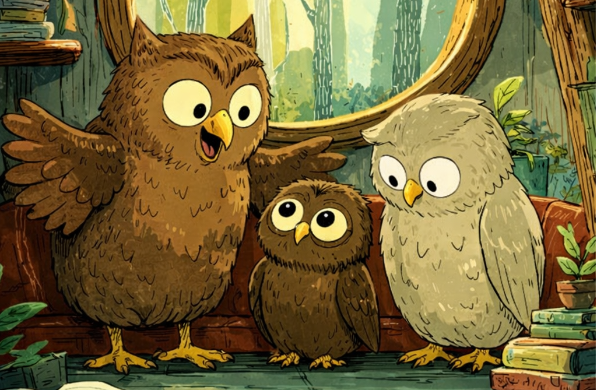

Jamo the Owl is a delightful children's book series that follows the adventures of a curious little brown owl named Jamo. Through playful storytelling and vivid, colorful illustrations, each book invites young readers into Jamo's imaginative world, where everyday moments turn into exciting journeys.
Whether he's exploring new places, solving small problems, or simply daydreaming, Jamo approaches life with wonder and creativity.
Written by Andrea Stair, the Jamo the Owl series features short paperback books that are ideal for young children. With their cheerful tone, charming character, and beautifully illustrated pages, these stories offer a fun and comforting reading experience that children will want to revisit again and again.